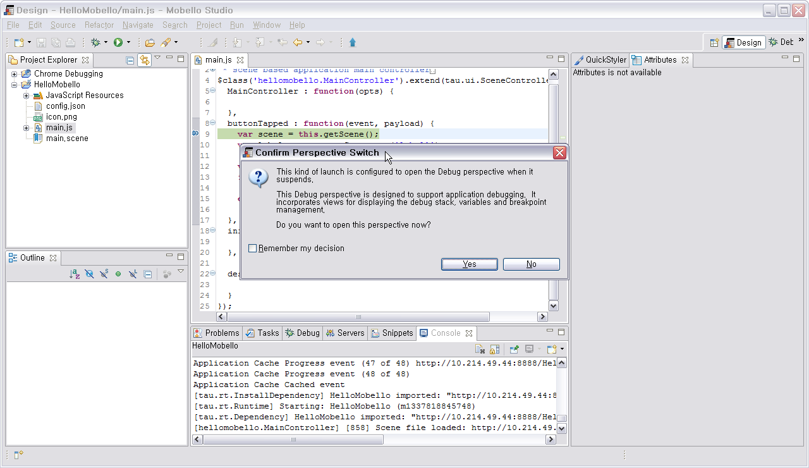
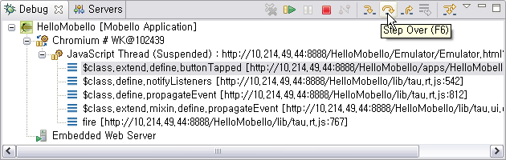
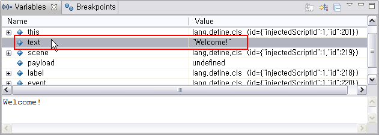
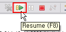
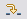
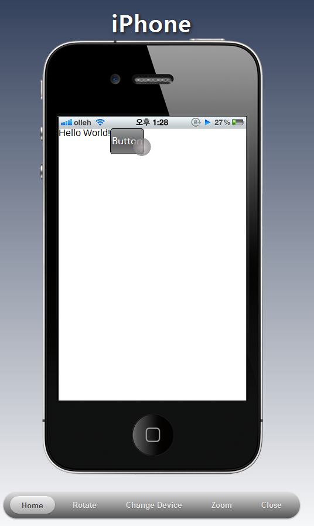

HelloMobello 프로젝트가 선택된 상태에서 툴바의 Debug 버튼을 클릭하면 Debug 모드에서 프로젝트를 실행할 수 있습니다.

Mobello Studio 처음 시작하기 가이드에서 만든 HelloMobello 프로젝트를 통해서 Mobello Studio 에서 디버깅하는 법과 Hot Code Replace 에 대해 알아 봅니다.
HelloMobello 프로젝트가 선택된 상태에서 툴바의 Debug 버튼을 클릭하면 Debug 모드에서 프로젝트를 실행할 수 있습니다.
main.js 를 열고 아래 그림에서 표시된 부분을 더블 클릭하면 해당 라인에 breakpoint 가 걸립니다.

이제 에뮬레이터에서 Button 컴포넌트를 클릭합니다. Debug 모드로 실행된 상태이기 때문에 breakpoint 가 설정된 라인에서 실행이 멈추면서 다음과 같은 다이얼로그가 나타납니다.

여기서 Yes 를 클릭하면 Debug 퍼스펙티브 로 전환됩니다. 멈춤 상태에서 Debug 뷰의 Step Over 버튼이나 F6 키를 누르면 한 라인씩 진행하게 됩니다.

F6 키로 if(text =='Welcome!') 라인까지 진행하면 Variables 뷰의 text 값이 'Welcome!' 으로 변경된 것을 확인할 수 있습니다.

이 상태에서 F8 키나 Resume 버튼을 누르면 멈춤 상태가 진행 상태로 전환되면서 main.js 의 나머지 부분이 실행되게 됩니다.

참고: F5 키나 Step Into 버튼 () 으로 함수의 내부로 진행할 수 있으며 F7 키나 Step Return 버튼 ( ) 으로 함수 밖으로 빠져 나갈 수 있습니다.
) 으로 함수 밖으로 빠져 나갈 수 있습니다.
Debug 모드로 실행하는 동안에 수정한 코드는 app 을 재시작하지 않고도 바로 에뮬레이터에 반영할 수 있습니다.
먼저 main.js 의 14 라이을 아래 그림 처럼 변경해봅니다.

이 상태에서 툴바의 Push Changes 버튼 이나 키보드의 Ctrl+Shift+Z 를 누르면 변경 사항이 자동 저장 되면서 실행중인 에뮬레이터에 바로 반영되게 됩니다.

에뮬레이터에서 테스트해보기 전에 Breakpoints 뷰에서 main.js 에 설정된 breakpoint 를 해제합니다.

에뮬레이터에서 Button 을 클릭해보면 출력되는 메시지가 Hello Mobello! 가 아니라 Hello World! 로 바뀐것을 확인할 수 있습니다.
